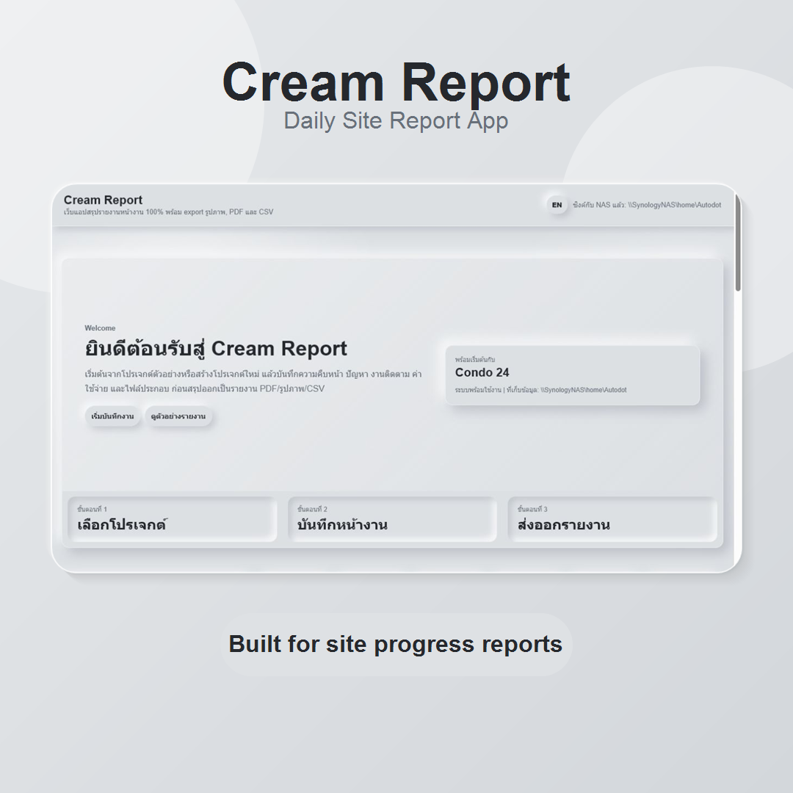
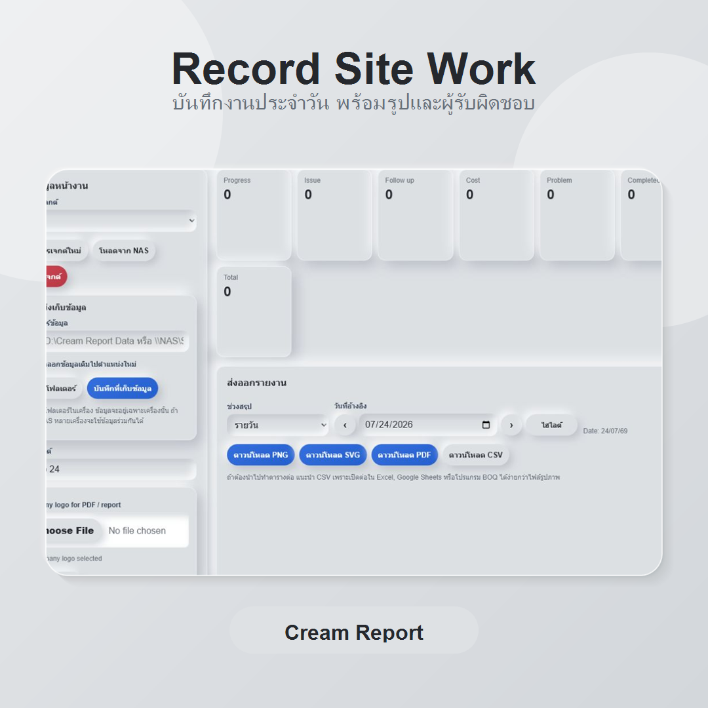
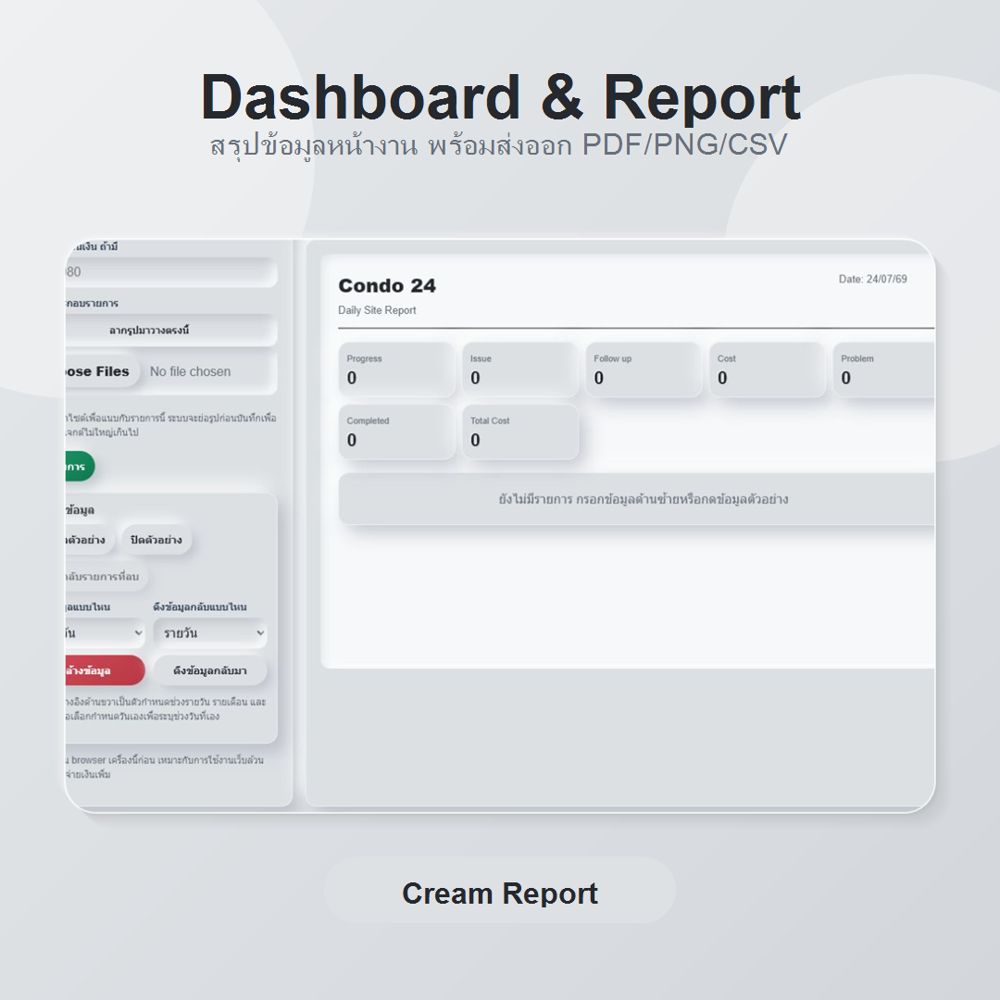
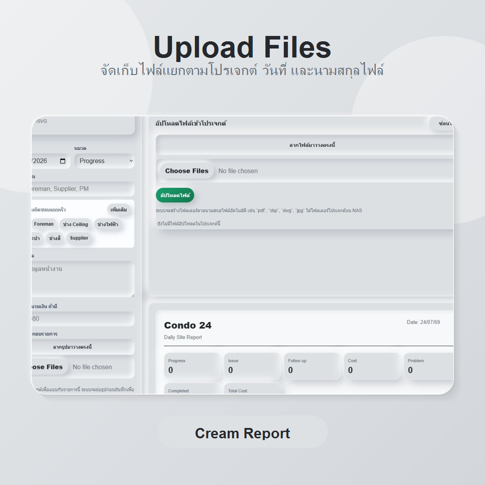
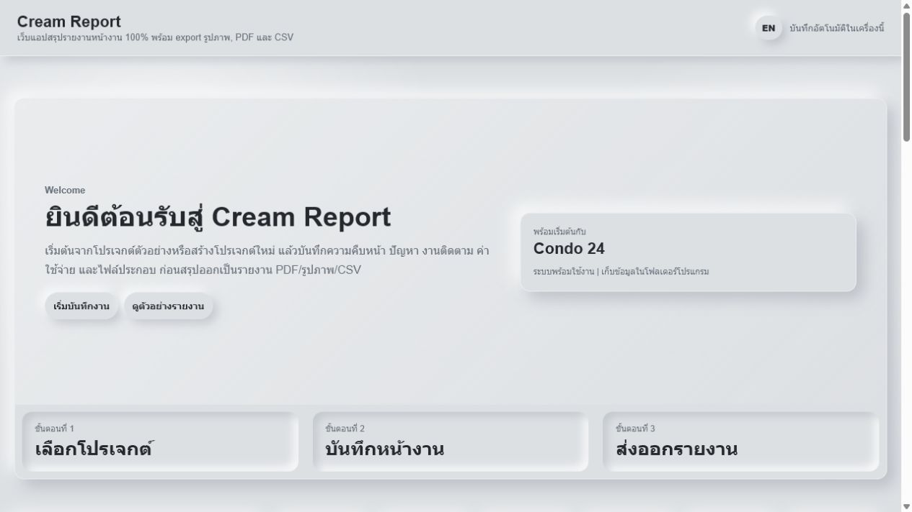
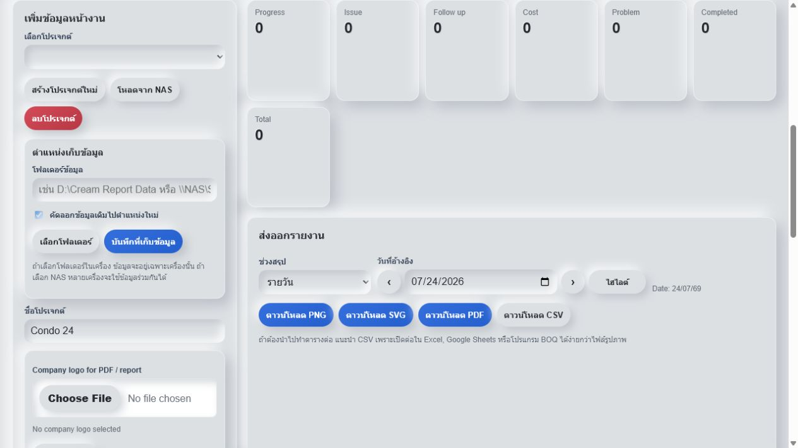
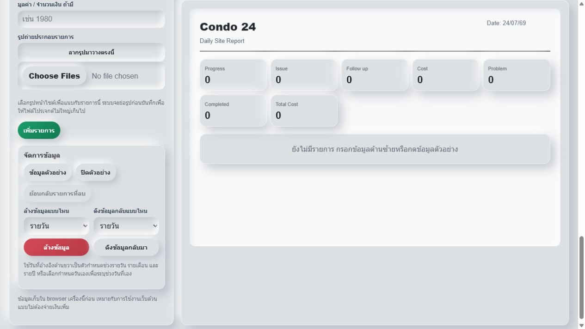
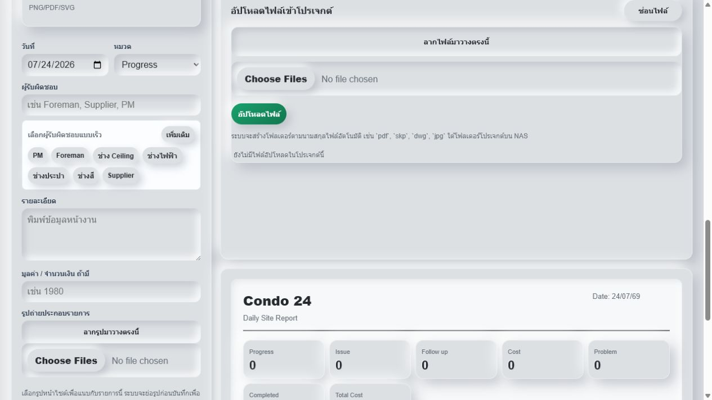

Digital Tool
Cream Report Portable
Portable report package for dashboard, site update, and project document workflow. Download the ZIP package and run it locally without installing the full project source.

Screenshots
Cream Report workflow







Download